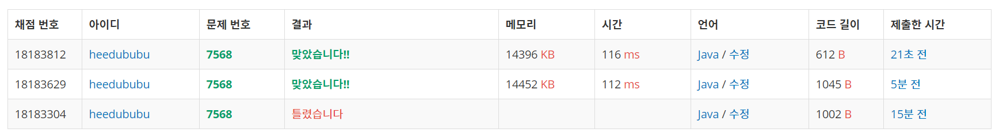

👀 문제
https://www.acmicpc.net/problem/7568
👊 도전
풀이 방법 1
1. 설계
- 3차원 배열을 이용하여 몸무게, 키, 1(등수)를 저장한다.
- 이중for문을 이용하여 나보다 몸무게, 키 둘다 큰 사람을 발견하면 people[i][2]를 하나 증가시킨다.
- 순회가 끝나면 등수가 모두 저장되었으므로 people[i][2]를 출력한다.
2. 구현 (성공 코드)
1
2
3
4
5
6
7
8
9
10
11
12
13
14
15
16
17
18
19
20
21
22
23
24
25
26
27
28
29
30
31
32
33
34
35
36
37
38
39
import java.util.Scanner;
/**
*
* @author HEESOO
*
*/
public class Main {
public static void main(String[] args) {
Scanner input=new Scanner(System.in);
int n=input.nextInt();
int[][] people=new int[n][3];
int x,y;
for(int i=0;i<n;i++){
x=input.nextInt();
y=input.nextInt();
people[i][0]=x;
people[i][1]=y;
people[i][2]=1;
}
for(int i=0;i<n;i++){
for(int j=0;j<n;j++){
if(i==j) continue;
if(people[i][0]<people[j][0]&&people[i][1]<people[j][1]){
people[i][2]++;
}
}
}
for(int i=0;i<n;i++){
System.out.print(people[i][2]+" ");
}
}
}
3. 설명
- 3차원 배열을 이용하여 몸무게, 키, 인덱스를 저장한다.
- 2중for문을 이용하여 모든 경우의 수를 체크하여 나보다 큰 사람을 찾아 갯수를 센다.
- 이때 나 자신을 비교하는 경우가 생기므로, i==j인 경우 continue로 그냥 넘긴다.
풀이 방법 2
1. 설계
- 몸무게, 키, 인덱스를 담는 Person 클래스를 생성한다.
- Person형 배열을 생성한 후 모든 값을 저장한다.
- Comparator을 이용하여 몸무게를 기준으로 오름차순 정렬한다.
- 등수를 저장할 배열을 생성한다.
- 나 자신의 뒤에 값들을 비교하며 큰 키가 있다면 cnt++한다.
- 등수 계산이 끝났다면 출력한다.
2. 구현 (성공 코드)
1
2
3
4
5
6
7
8
9
10
11
12
13
14
15
16
17
18
19
20
21
22
23
24
25
26
27
28
29
30
31
32
33
34
35
36
37
38
39
40
41
42
43
44
45
46
47
48
49
50
51
52
53
54
55
56
57
import java.util.Arrays;
import java.util.Comparator;
import java.util.Scanner;
/**
*
* @author HEESOO
*
*/
class Person{
int height;
int weight;
int index;
public Person(int h, int w, int i){
this.height=h;
this.weight=w;
this.index=i;
}
}
public class Main {
public static void main(String[] args) {
Scanner input=new Scanner(System.in);
int n=input.nextInt();
Person[] people=new Person[n];
int x, y;
for(int i=0;i<n;i++){
x=input.nextInt();
y=input.nextInt();
people[i]=new Person(x,y,i);
}
Arrays.sort(people, new Comparator<Person>(){
@Override
public int compare(Person p1, Person p2){
return p1.height-p2.height;
}
});
int cnt, myHeight, myWeight;
int[] score=new int[n];
for(int i=0;i<n;i++){
cnt=0;
myHeight=people[i].height;
myWeight=people[i].weight;
for(int j=i;j<n;j++){
if(myHeight<people[j].height&&myWeight<people[j].weight) cnt++;
}
score[people[i].index]=cnt+1;
}
for(int i=0;i<n;i++){
System.out.print(score[i]+" ");
}
}
}
3. 설명
- Person클래스를 생성하여 몸무게, 키, 인덱스를 저장한다.
- Comparator을 이용하여 몸무게 기준 오름차순 정렬한다.
- 나 뒤의 값들을 확인하며 나보다 더 큰 사람을 센다.
- 이때 몸무게로 정렬했는데도 다시 한 번 체크하는 이유는, 위 오름차순 정렬에서 몸무게가 같을 경우에는 자리 이동이 이루어지지 않았기 때문이다.
3. 결과
 🤟 성공 🤟 첫 번째가 3차원 배열을 이용, 두 번째가 Person클래스를 이용한 것이다.